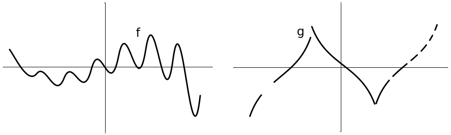
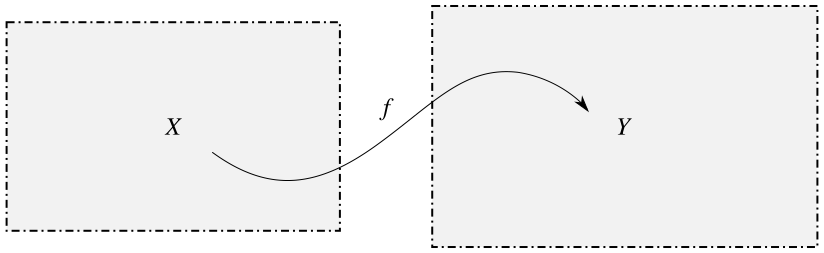
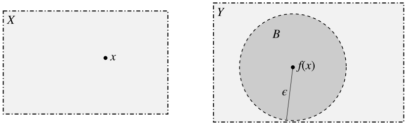
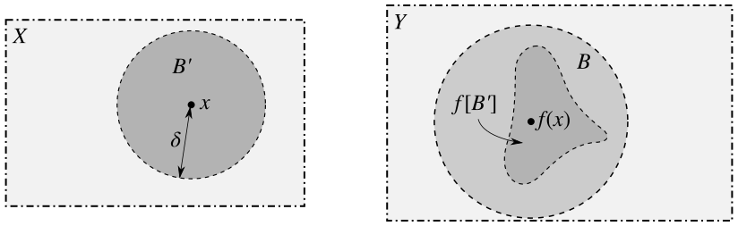

Continuity and Homeomorphisms
Contents
Continuity
The concept of continuity is central to the study of topology. So much so, in fact, that whenever anyone talks about a map between topological spaces, they generally expect you to know that they're talking about a continuous map.[1]
I've heard it said that a function is continuous if you can draw its graph without lifting your pencil. This is an awful, imprecise definition, but it does give us a hint of intuition regarding the nature of continuity.
So then what is continuity? Let's take a look at pieces of two functions, $f,g:\mathbb{R}\to\mathbb{R}$.[2]

Your gut instinct should tell you that $f$ is continuous on the interval depicted but $g$ is not. So what does your gut know that you don't? Here's a (very) rough description:
If you zoom in far enough on any point in the graph of $f$, the whole graph behaves similarly in that region. On the other hand, there are pieces of the graph of $g$ which look nothing like nearby pieces.
This is just an informal way of saying that if a function is continuous, points that are close together get mapped to points that are close together. This phrasing is not only much more revealing, it also allows us to extend the definition of continuity away from real-valued functions.
Let's make this notion more precise, in the context of metric spaces. I'll give you the definition first, and then try to make sense of it for you.
Definition. Let $X$ and $Y$ denote metric spaces. A function $f:X\to Y$ is continuous at the point $x\in X$ if for every real number $\epsilon>0$, there exists a real number $\delta>0$ such that $f\big[B(x,\delta)\big]\subseteq B\big(f(x),\epsilon\big)$.
Definition. A function $f:X\to Y$ is continuous if it is continuous at every point $x\in X$.
All the definition really says is that if a function is continuous at $x$, no matter how closely you look at $f(x)$ there will always be points around $x$ which get mapped within that distance of $f(x)$. So like I said earlier, points that are close together get mapped to points that are close together.
If that makes perfect sense to you, skip the next few paragraphs. Otherwise, I'm going to explain this definition to you very slowly through a story.
Think of the person you loathe the most in this world. I'll refer to this person as "the enemy" and use the pronoun "it."
Say you have two metric spaces $X$ and $Y$, and a continuous map $f:X\to Y$ between them:

You are omnipotent, as in real life, and you know everything there is to know about $X,Y$ and $f$. However, the enemy, being a foolish fool, mistakenly thinks that $f$ is not continuous. And so it tries to trick you. It plots a point $x\in X$ and its image $f(x)\in Y$. Then it draws an open ball $B$ of radius $\epsilon$ around $f(x)$.

The enemy challenges you to find an open ball $B'$ around $x$ whose image is contained in $B$. So you think for a while and you use your information about $f$ and you quickly come up with such an open ball, with radius $\delta$.

The enemy is angry. It chooses a new smaller ball $B$ and you draw a new, smaller $B'$ to compensate. You do it faster this time, because you've noticed a pattern. No matter what radius $\epsilon$ it chooses to make $B$, you've come up with a method to calculate the radius $\delta$ that $B'$ needs to be so that $f[B']$ will fit inside $B$.
You tell the enemy your method, and it has no choice but to conclude that $f$ is continuous at $x$. Next, you demonstrate how to do this for any point $x\in X$, and reason that $f$ is continuous. The enemy's head promptly explodes.
Let's look at a specific example. Let $X$ be a metric space and consider the identity function $i:X\to X$ defined by $i(x)=x$ for every $x\in X$. The enemy first chooses a point $x_0\in X$ and draws a ball of radius $\epsilon$ around $x_0=i(x_0)$. You realize immediately that
$$\begin{align}
i\big[B(x_0,\epsilon)\big] &= B(x_0,\epsilon) \\
&= B\big(i(x_0),\epsilon\big)
\end{align}$$
because $i$ is the identity function. So no matter what point $x_0$ or radius $\epsilon$ the enemy chooses, picking $\delta=\epsilon$ will always work. This argument shows that the identity function on any metric space is continuous!
Hopefully the definition of continuity makes sense to you now, because I'm about move on to an equivalent and simpler definition.
Theorem. Let $X$ and $Y$ denote metric spaces with $f: X\to Y$. Then $f$ is continuous if and only if the preimage $f^{-1}[U]$ of any open set $U\subseteq Y$ is open in $X$.
Proof. Suppose first that $f:X\to Y$ is continuous. If $f^{-1}[U]=\varnothing$ then we are done because this is open in $X$. Suppose then that $f^{-1}[U]\ne\varnothing$. Choose $x\in f^{-1}[U]$, so that $f(x)\in U$. Since $U$ is open, there exists a real number $\epsilon>0$ such that $B\big(f(x),\epsilon\big)\subseteq U$. Since $f$ is continuous, there exists a real number $\delta>0$ such that $f\big[B(x,\delta)\big]\subseteq B\big(f(x),\epsilon\big)$. That is, $B(x,\delta)\subseteq f^{-1}\big[B\big(f(x),\epsilon\big)\big]\subseteq f^{-1}[U]$. Thus, there is an open ball centered at $x$ which is contained in $f^{-1}[U]$, so clearly $f^{-1}[U]$ is open in $X$.
Suppose conversely that $f^{-1}[U]$ is open in $X$ whenever $U$ is open in $Y$. Choose $x\in X$ and a real number $\epsilon>0$. Since $B\big(f(x),\epsilon\big)$ is open in $Y$, we have that $f^{-1}\big[B\big(f(x),\epsilon\big)\big]$ is open in $X$. Since $x\in f^{-1}\big[B\big(f(x),\epsilon\big)\big]$, there exists a real number $\delta>0$ such that $B(x,\delta)\subseteq f^{-1}\big[B\big(f(x),\epsilon\big)\big]$. Thus, $f$ is continuous.
This is most excellent. We've arrived at a "distance-free" definition of continuity, phrased entirely in terms of open sets. You know what that means! We're going to adopt this as the definition of continuity in a general topological setting.
Definition. Let $X$ and $Y$ denote topological spaces. A function $f:X\to Y$ is continuous if $f^{-1}[U]$ is open in $X$ whenever $U$ is open in $Y$.
There is also a corresponding definition for continuity at a point, but we will never need it.
As is oft desired, we would like a way to determine whether a function between topological spaces is continuous, given only a basis for each space. This is done easily and naturally.
Theorem. Let $X$ and $Y$ denote topological spaces, let ${\cal B}_X$ be a basis for the topology on $X$ and ${\cal B}_Y$ a basis for the topology on $Y$. A function $f:X\to Y$ is continuous if and only if $f^{-1}[B]$ is open in $X$ whenever $B\in{\cal B}_Y$.
Proof. Suppose first that $f$ is continuous. Since $B$ is a basis element, it is open in $Y$. It follows immediately that $f^{-1}[B]$ is open in $X$.
Suppose next that the preimage of any basis element in $Y$ is open in $X$. It has been established that for any open set $U\subseteq Y$, there exists an indexing set $I$ and basis elements $B_i\in{\cal{B}}_Y$ such that $U=\bigcup\limits_{i\in I}B_i$. Thus,
$$f^{-1}[U]=f^{-1}\left[\bigcup\limits_{i\in I}B_i\right]=\bigcup\limits_{i\in I}f^{-1}[B_i],$$
which is open since it is the union of open sets.
Yay! Now let's use our beautiful definition of continuity to prove an elementary property of continuous maps: that the composition of two continuous functions
Theorem. Let $X,Y$ and $Z$ denote topological spaces with continuous functions $f:X\to Y$ and $g:Y\to Z$. Then their composition $(g\circ f):X\to Z$, defined by $(g\circ f)(x)=g\big(f(x)\big)$ for every $x\in X$, is continuous.
Proof. Suppose $U\subseteq Z$ is open. Then $g^{-1}[U]\subseteq Y$ is open, so $f^{-1}\big[g^{-1}[U]\big]\subseteq X$ is open. Thus, it suffices to show that $f^{-1}\big[g^{-1}[U]\big]=(g\circ f)^{-1}[U]$.
Suppose $x\in f^{-1}\big[g^{-1}[U]\big]$. Then $f(x)\in g^{-1}[U]$, so $g\big(f(x)\big)=(g\circ f)(x)\in U$. Thus, $x\in (g\circ f)^{-1}[U]$.
Suppose next that $x\in (g\circ f)^{-1}[U]$. Then $(g\circ f)(x)=g\big(f(x)\big)\in U$, so $f(x)\in g^{-1}[U]$ and thus $x\in f^{-1}\big[g^{-1}[U]\big]$.
Homeomorphisms
Ages ago, when I first started talking about topological spaces, I mentioned the idea of topological equivalence. I believe I said something like "two spaces are topologically equivalent if they can be continuously deformed into each other," and that "continuous deformations are ways we can bend, stretch and move spaces without tearing, cutting or gluing them." We now have the machinery to formally define this notion.
Definition. Let $X$ and $Y$ denote topological spaces. A bijective function $f:X\to Y$ is a homeomorphism if both $f$ and $f^{-1}:X\to Y$ are continuous. We say that the spaces are homeomorphic.
It is particularly important that $f$ is bijective, since otherwise $f^{-1}$ would not be well defined.
There is no consistent symbol for "is homeomorphic to," although I've seen several used by different authors. For instance, $X\simeq Y$, $Y\approx Y$ or $X\sim Y$ could all be used. And I've seen them all used. I won't use any such notation, however, because I find it terribly confusing.
It should go without saying that if a function is a homeomorphism then so is its inverse. The next result is perhaps a tad less obvious, although its proof is almost trivial.
Theorem. Let $X, Y$ and $Z$ denote topological spaces with homeomorphisms $f:X\to Y$ and $g:Y\to Z$. Then $X$ is homeomorphic to $Z$ via $(g\circ f):X\to Z$.
Proof. Since $f,g$ are bijective and continuous, $g\circ f$ is bijective and continuous. Furthermore, since $f^{-1},g^{-1}$ are bijective and continuous, $(g\circ f)^{-1}=f^{-1}\circ g^{-1}$ is bijective and continuous. Thus $g\circ f$ is a homeomorphism.
Unfortunately, it is difficult to give simple examples of homeomorphic spaces without first discussing the constructions of new spaces, so more examples of homeomorphisms won't come for a few posts. We can, however, talk about what homeomorphism really means.
Given a homeomorphism $f$, we know that $f$ and its inverse $f^{-1}$ are continuous. This means that open sets get mapped to open sets in both directions. So essentially, homeomorphisms preserve open sets. Why is this nice? Because topological spaces are defined in terms of open sets. This indicates that homeomorphic spaces are really the same, just with their open sets renamed in some way.
There is a lot more to say about homeomorphisms. In fact, much of what topologists do is in an attempt to identify which spaces are homeomorphic.[3] And it isn't always obvious directly from the definition. All the tools I bring up from now on will be useful on this quest.
We will mainly be interested in things called topological invariants, which are characteristics of spaces that are preserved under homeomorphisms. If two spaces have different invariants, this tells us that these spaces are not homeomorphic. As we shall see, connectedness, compactness, countability, separation conditions, homology and homotopy groups are all topological invariants. These are all properties of the open sets of spaces, so this makes sense. Properties like boundedness and completeness, on the other hand, which rely on the notion of distance, are not topological invariants.